All five workflows completed this slide. The official reference contains 10,121,322 known code-1/code-2 pixels; 0 are metastasis and 1,470,124 (14.5%) lie outside the reviewed display support. All scores use the same known-pixel denominator, including those outside support. Native output is primary; shared-support output is a separate sensitivity analysis.
Bora was fitted only on tumor_093. The class-aware U-Net and DeepLabV3+ checkpoints used tumor_093 only after Benchmark 1 pretraining. MedSAM received boxes from this one-slide U-Net; VISTA-PATH uses a released generic “tumor” prompt. These are configured workflow comparisons with different prompt dependencies and pretraining, not a controlled architecture ranking.
Predicted metastasis and non-metastatic tissue signals
An exploratory signal requires an eight-connected focus of at least 625 pixels (0.01 mm²) inside the common reviewed H&E tissue area. This rule was fixed for the current pipeline; the reference was publicly visible before this slide was scored. It is not a diagnosis.
| Method | Tumor-like focus | Explicit non-metastatic focus | Largest tumor-like focus, mm² | Total tumor-like area, mm² |
|---|---|---|---|---|
| Bora · tumor_093-only fit | Present | Present | 1.1363 | 4.8768 |
| Class-aware U-Net · tumor_093-only fit | Present | Present | 0.0154 | 0.1635 |
| DeepLabV3+ · tumor_093-only fit | Present | Present | 0.0155 | 0.3078 |
| MedSAM with U-Net boxes | Present | Not available | 0.0367 | 0.2020 |
| VISTA-PATH generic tumor prompt | Present | Not available | 2.2462 | 8.4469 |
Binary agreement on official known pixels
The official reference contains no metastasis. IoU, Dice, metastatic sensitivity and balanced accuracy are undefined here. False-positive rates use all official code-1 known pixels; tissue area counts false-positive pixels within reviewed H&E support.
| Method | Known-pixel false-positive rate, native | Known-pixel false-positive rate, shared support | False-positive tissue, mm², native | False-positive tissue, mm², shared | Unmatched predicted foci, native |
|---|---|---|---|---|---|
| Bora · tumor_093-only fit | 3.09% | 2.90% | 4.989 | 4.696 | 1366 |
| Class-aware U-Net · tumor_093-only fit | 0.10% | 0.10% | 0.157 | 0.157 | 714 |
| DeepLabV3+ · tumor_093-only fit | 0.17% | 0.17% | 0.275 | 0.275 | 2073 |
| MedSAM with U-Net boxes | 0.12% | 0.12% | 0.197 | 0.197 | 265 |
| VISTA-PATH generic tumor prompt | 5.22% | 5.22% | 8.447 | 8.447 | 1039 |
Completion: five of five methods. See exact denominators, confusion counts, boundary and lesion metrics. The selected public-release slide does not estimate population performance; patient and center overlap with fitting remains unverified.
Contour fidelity: Bora was scored on a 4 µm grid. Its class mask received 6 µm smoothing, while the reviewed H&E tissue boundary remained fixed. This GeoJSON traces the exact scored mask; no extra vector smoothing was applied because that would move boundaries and change pixel agreement. Grid steps can remain visible at high zoom, especially along tissue edges.
Inspect the exact Bora GeoJSON
Interactive inspection is loading. Download the saved Bora GeoJSON.
The nine fields sample regular reviewed tissue positions without reference-guided selection. This visual selection does not enter the metrics.
Color key for matched panels: red is a tumor-like positive signal and green is the binary negative area inside the reviewed H&E tissue support. Bora, U-Net and DeepLabV3+ explicitly output a non-metastatic class. MedSAM and VISTA-PATH do not: their green is derived by exclusion of their positive signal for display and binary scoring, not a separate benign tissue prediction.
Tissue-region overview · analysis restricted to reviewed tissue
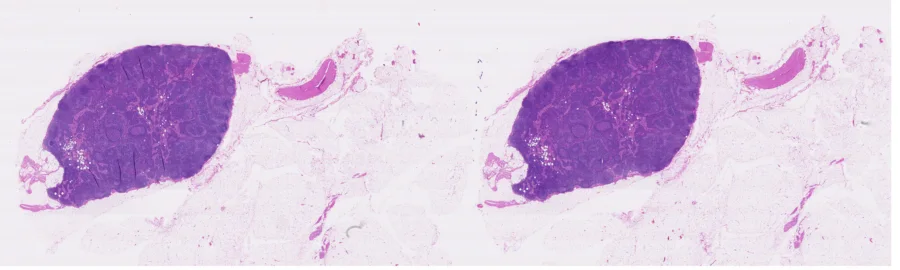
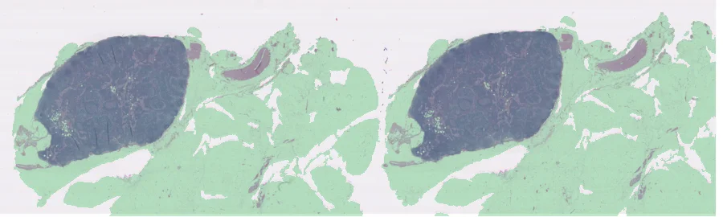
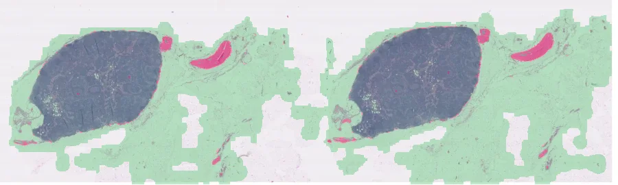
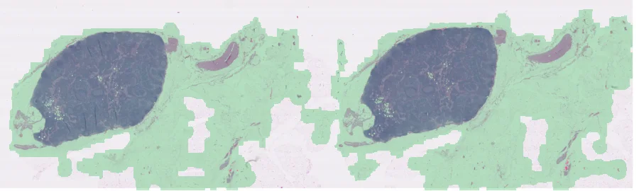
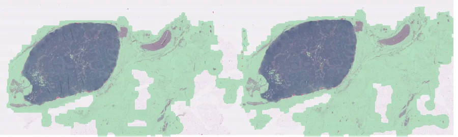


Field 01 · tissue context · same coordinates in every panel
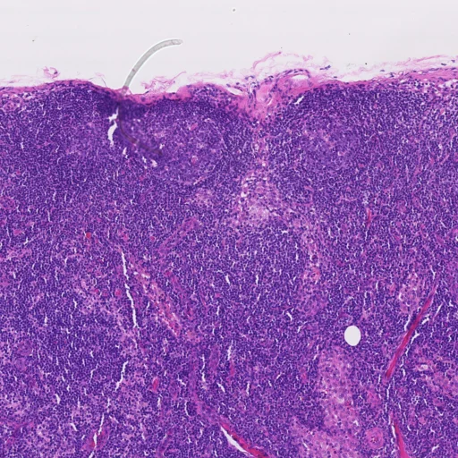
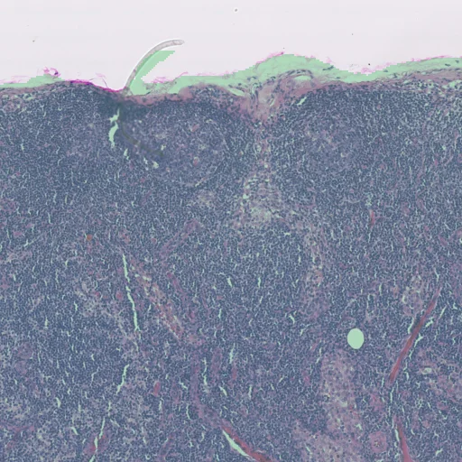
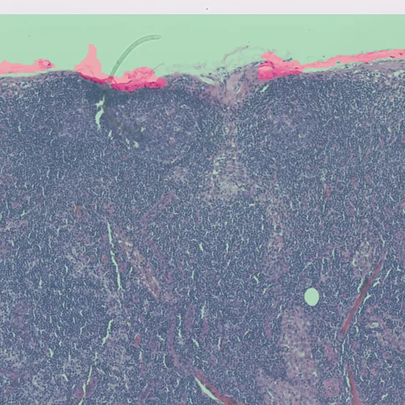
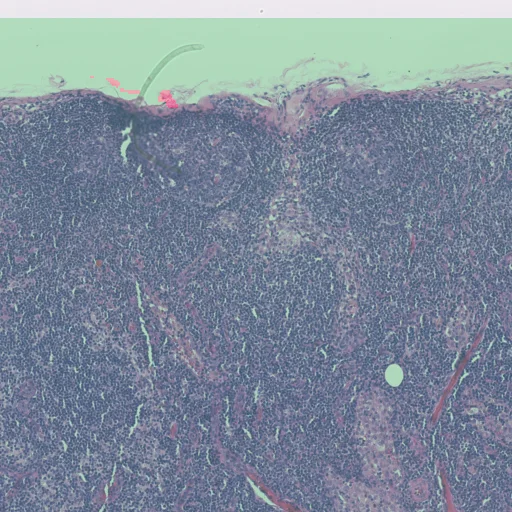
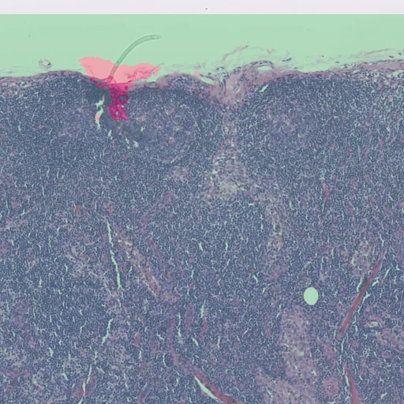


Field 02 · tissue context · same coordinates in every panel


Field 03 · tissue context · same coordinates in every panel
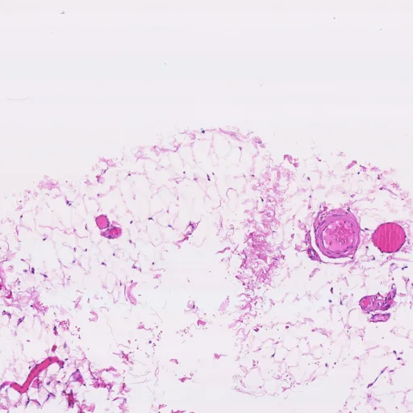
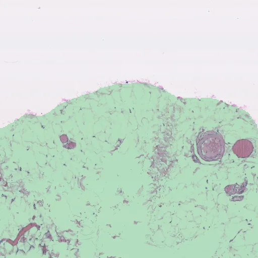
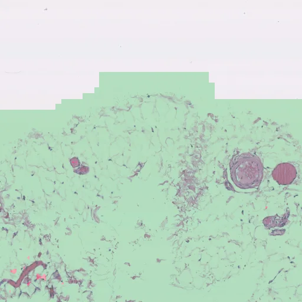
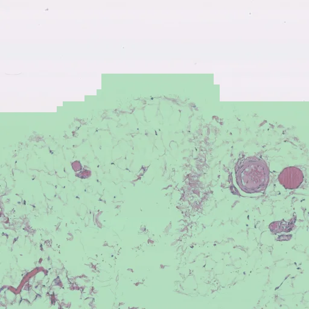


Field 04 · tissue context · same coordinates in every panel
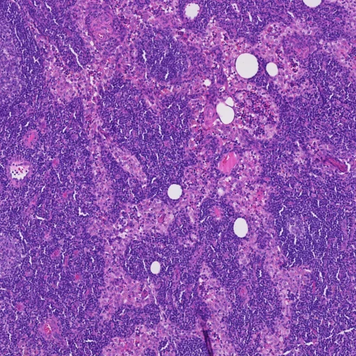

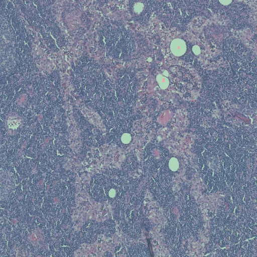
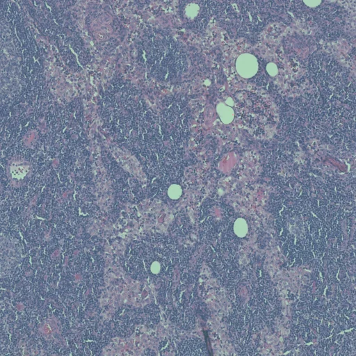


Field 05 · tissue context · same coordinates in every panel
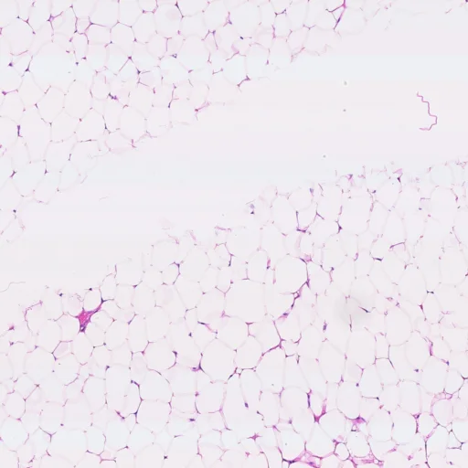
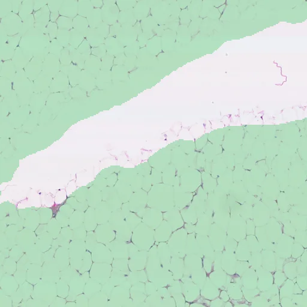

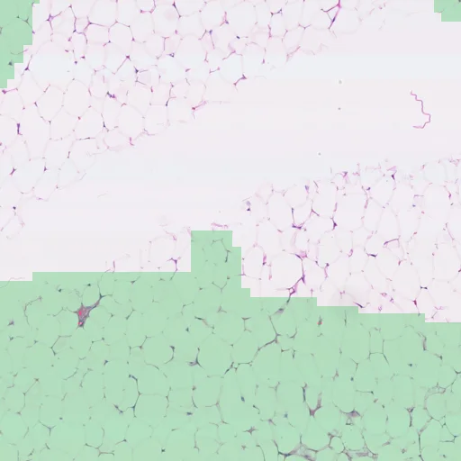


Field 06 · tissue context · same coordinates in every panel
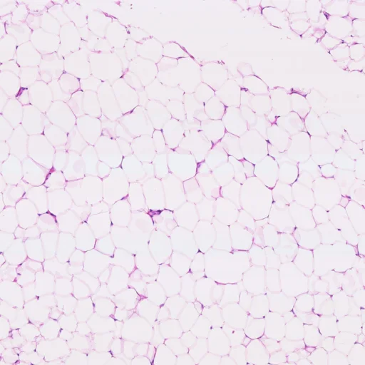
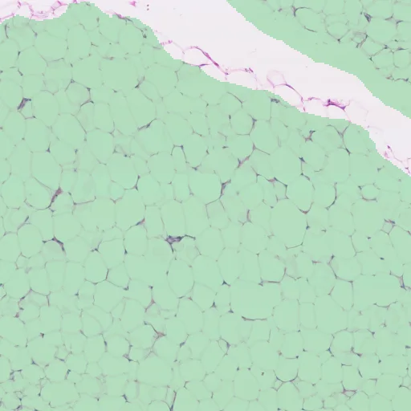

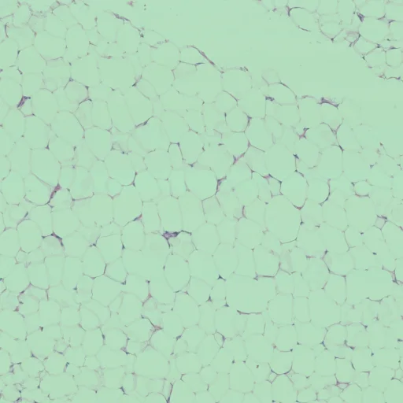
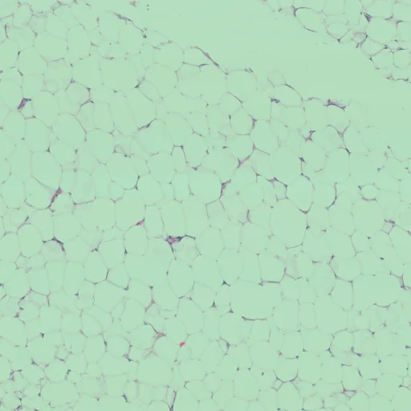


Field 07 · tissue context · same coordinates in every panel
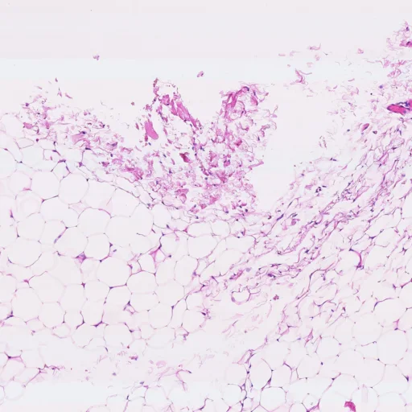
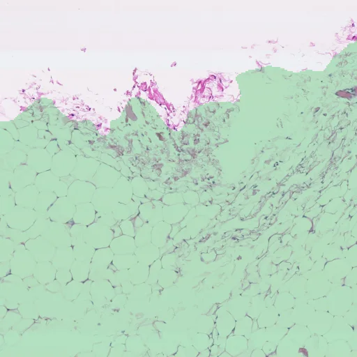
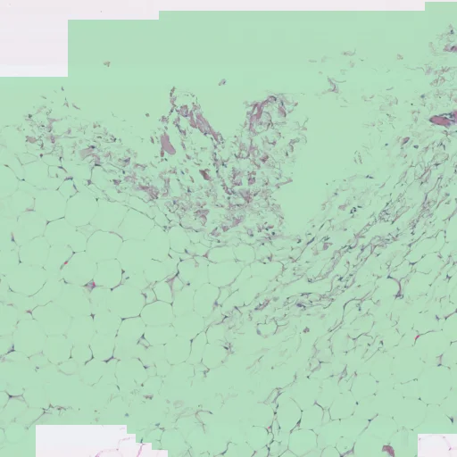


Field 08 · tissue context · same coordinates in every panel
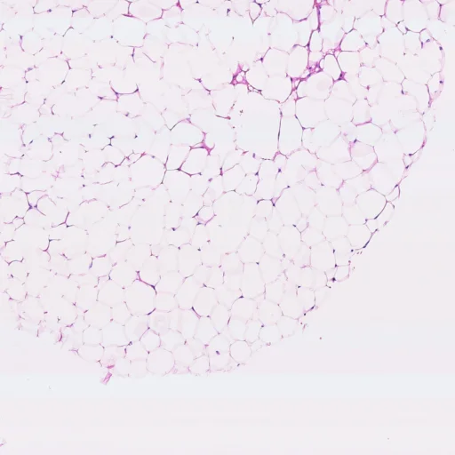
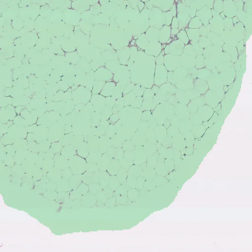


Field 09 · tissue context · same coordinates in every panel
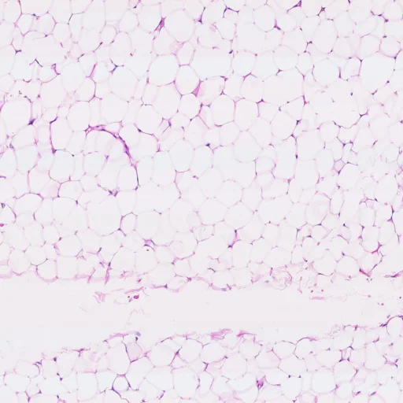

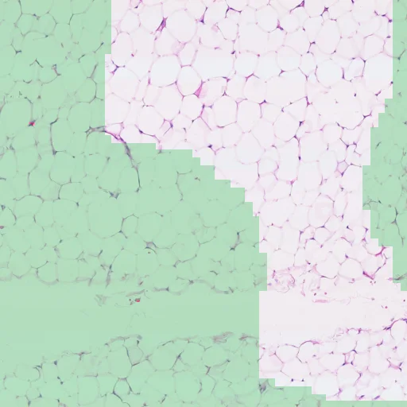